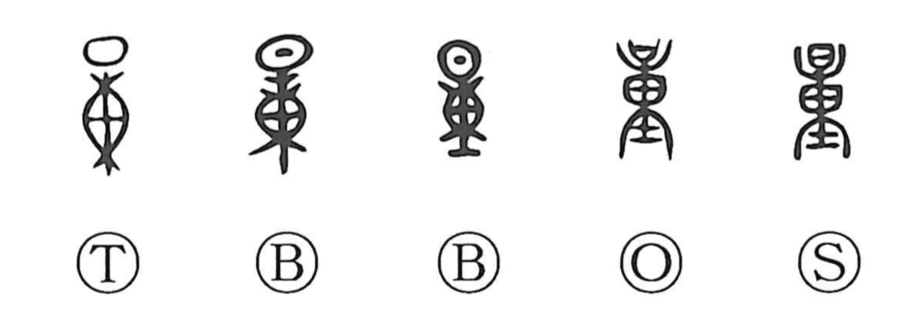

量

Kun: hakaru, oshihakaru, masume | On: ryo
quantity ・ amount ・ to measure ・ to estimate
Explanation
量 is a pictograph built on the ancient form 東, which here does not mean “east” but sketches a sack tied at top and bottom—the original form of 橐 (taku), “sack.” In 量 a spout for pouring grain is drawn above this sack, while below it sits 士, used as a weight. The whole image is that of measuring grain with a sack and counterweight, hence the senses “to measure,” “measure/amount,” and, by extension, “to gauge” or “to infer,” as in suiryo and shinryo. A related graph, 重, similarly shows the sack with a weight beneath; together as 重量 they denote “weight.”